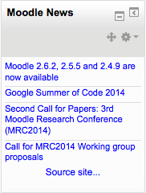

The RSS feeds block enables RSS feeds from external websites to be displayed within Moodle. As the information on the other site (for example, news headlines or recently added documents) is changed the block will update to show the latest information.
One or more RSS feeds can be added to a course by selecting them from an existing list. Site and course home pages are common places to place an RSS feed block(s).
After adding an RSS feed block, select the edit icon on the Remote News Feed block. The default will open up the Configure this block tab.
All the Moodle site’s RSS feeds can be managed on the Manage all my feeds tab in the RSS News Feed edit menu. The site administrator may give other roles permission to use this tab. This tab creates a list of RSS feeds that can be selected for display in every course on the Moodle site.
Copy and paste (or type) the URL address of the RSS feed in the space provided. This the generating site’s actual RSS page address. For example here is a Moodle RSS feed address : http://moodle.org/rss/file.php/1/1/forum/1/rss.xml
Adding a custom title will take the place of the one supplied by the generating site.There is a validation tool included to confirm the feed URL is accurate.
When checked, the Shared Feed checkbox makes the feed available (although not necessarily visible) to all courses on the Moodle site. This would be useful, for example, when a college has an urgent announcements feed that would be of interest to all students, regardless of the Moodle course in which they are enrolled. Leave unchecked if the feed is of interest only to a single course.
Click the Add button to submit the feed.
The RSS feeds block has some settings which may be changed by an administrator in Administration > Site administration > Plugins > Blocks > Remote RSS feeds.
- Enteries per feed - The default number of entries to show per feed shown in the block. This can be overridden when you actually set up a block in a course.
- Timeout - The time in minutes between a reread of the feed by Moodle. Since some feeds on busy sites can take long to load, it can slow down the load of your course page. Therefore it is wise to set this time rather high, so only every now and then a visitor of your course is the victim of the slow remote server. Time is in minutes here.